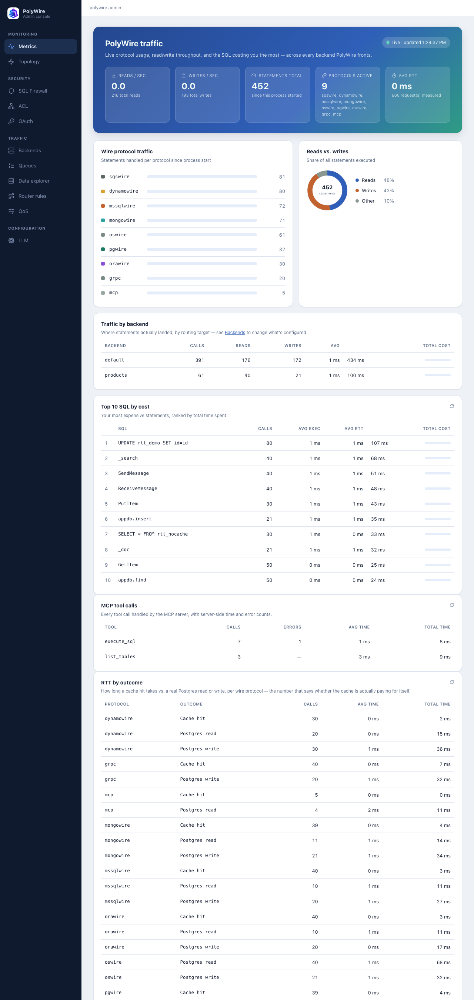
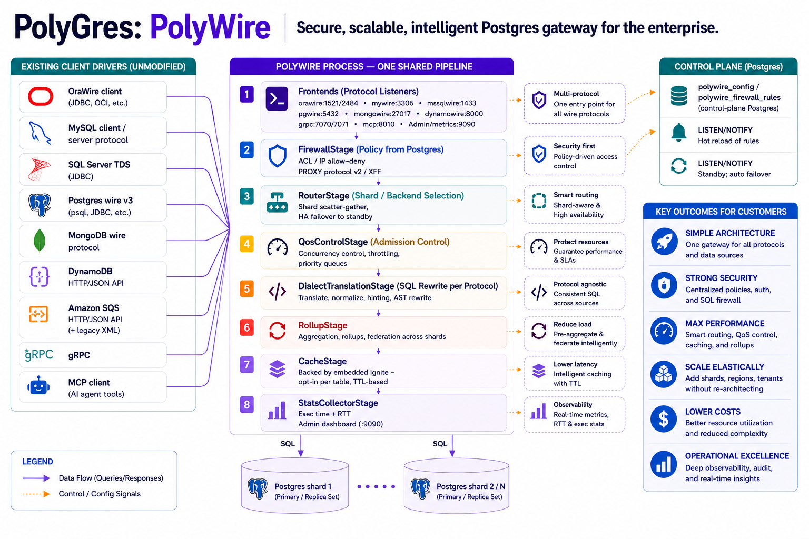
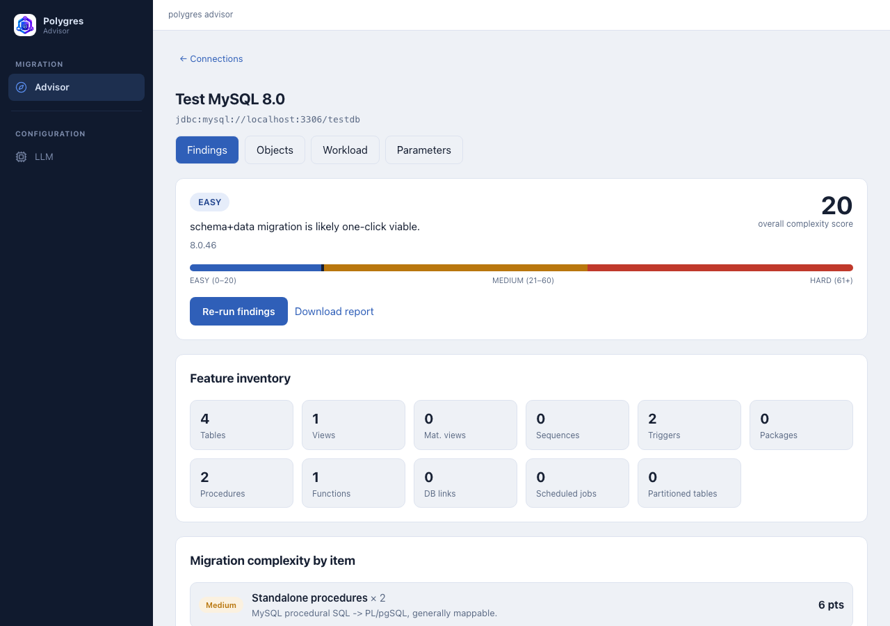

Polygres
PolyWire & PolyAdvisor
A secure, scalable, intelligent Postgres gateway for the enterprise — and the tool that tells you how hard it'll be to get everything else onto Postgres in the first place.
PolyWire
A secure, scalable, intelligent Postgres gateway for the enterprise — built for a world where AI agents, not just applications, need governed access to your data. PolyWire speaks Oracle, MySQL, SQL Server, Postgres, MongoDB, DynamoDB, Amazon SQS, gRPC, and MCP on one side, and real Postgres on the other, with a SQL firewall, ACL, QoS admission control, and live observability in front of every one of them. Migration compatibility is one use case among several — not the whole story.
Use cases
- Governed access for AI agentsAn MCP frontend lets AI agents and modern service architectures query Postgres directly — through the same SQL firewall, ACL, and QoS controls as every other client, not a separate, unguarded path to your data.
- A single, secure gateway across multiple data sourcesOne admin surface — SQL firewall, ACL, routing, QoS, live metrics — in front of traffic that used to be spread across five different databases' own tooling, each with its own access model.
- Standardizing on one databaseDifferent teams' applications speak different protocols against different databases. PolyWire lets every one of them land on the same Postgres, without every team rewriting its data layer first.
- Permanent compatibility shimSome client code isn't worth touching — an old MongoDB driver, a legacy ORM tied to a specific dialect. Run PolyWire indefinitely and let it keep speaking that protocol forever while everything actually lives in Postgres.
- Mid-migration bridgeRun PolyWire while PolyAdvisor (or another migration tool) moves schema and data behind the scenes — old client code keeps working unmodified throughout the cutover, no coordinated "flag day" rewrite required.
Quick start — point it at a real Postgres backend via POLYWIRE_PG_*:
docker run \
-p 19090:19090 -p 15432:15432 -p 13306:13306 -p 11521:11521 \
-p 14333:14333 -p 27017:27017 -p 18000:18000 -p 9324:9324 \
-e POLYWIRE_PG_HOST=<host> \
-e POLYWIRE_PG_PASSWORD=<password> \
ghcr.io/polygres26/polywire:latest
Admin console

Architecture

Multi-AZ deployment

PolyAdvisor
Tool for moving off Oracle/MySQL/MariaDB/SQL Server onto Postgres: assess how hard the migration is, then bridge your existing application to Postgres while you do it.
Point PolyAdvisor at a source database — or upload a performance report if you can't share a live connection — and it gives you a concrete migration-difficulty score, a breakdown of exactly what's driving that score, and a Postgres sizing recommendation. No guesswork, no black box: the score is rules-based and reproducible, not LLM-generated, so running it twice against the same database gives you the same answer. Once you know what you're migrating and how hard it'll be, PolyWire (above) is what lets your application keep running against its original protocol while the migration actually happens.
Two ways to get an assessment
- Connect a databaseA read-only connection profiles the real schema, feature usage, and query workload directly — no data leaves your database, only metadata and query statistics. Deterministic: run it twice, get the same score.
- Upload a performance reportDrop in an Oracle AWR report, a MySQL performance report, or a SQL Server DMV/Query Store export, and an LLM reads it for you. A genuinely different kind of signal than a live connection — labeled as such everywhere it shows up, never presented as equivalent.
What you get
- Migration difficulty score and tier — reproducible and rules-based.
- Feature inventory — PL/SQL packages, triggers, procedures, partitioning, database links, scheduled jobs, and more, each weighted by real migration cost.
- Downloadable findings report (PDF) — built for sharing with a stakeholder.
- Postgres sizing recommendation — vCPUs, memory, storage, and IOPS, with a plain-English reason behind every number.
Quick start:
docker run -p 8090:8090 \
-v polyadvisor-data:/data \
ghcr.io/polygres26/polyadvisor:latest
Admin console
